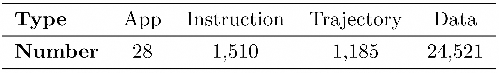

Our agent is capable of correcting itself from an incorrect state back to the correct action (called the eureka move)!
Our training framework consists of three stages:
Initial format fine-tuning using our dataset.
Single-step GRPO training with action-level rewards to enhance the format compliance and click accuracy.
On-line training with task-level rewards based on multi-turn trajectories to improve the generalization ability.
Figure (a) illustrates an action-induced agent that is encouraged to “think longer” before selecting a single-step action. In contrast, Figure (b) depicts an agent trained at the task-level rewards, which explores and adjusts its trajectory over multi-turn interactions with the environment.
Static evaluation results of Mobile-R1.
Comparison of Mobile-R1 and Qwen2.5-VL-3B-Instruct
Task: "Open Fliggy, enter the hotel package, enter the popular live broadcast, find Fliggy Super VIP, and follow the anchor"
Static evaluation results of Mobile-R1.
Distribution of trajectory length.